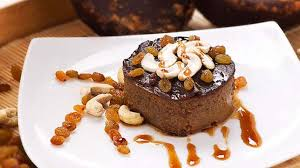

Into a bowl, add eggs and vanilla essence. Beat well and keep it aside.
Into a saucepan, add jaggery and water. Stir until the jaggery is melted
Add the milkmaid and mix well. Bring it to a boil and simmer for 2 minutes.
Remove from the heat and allow it to cool slightly.
Slowly add the egg mixture to the jaggery mixture, stirring continuously to prevent the eggs from curdling.
Strain the mixture through a fine sieve into a bowl to remove any lumps or impurities.
Pour the mixture into individual serving bowls or a large baking dish.
Place the bowls or dish in a larger baking pan. Fill the pan with hot water until it reaches halfway up the sides of the bowls or dish.

In a small pan, combine sugar + water.
Heat over medium until it turns golden brown.
Quickly pour it into 4 ramekins or small bowls, tilting to coat the bottom. Set aside.
In a bowl, whisk eggs, condensed milk, vanilla essence, and a pinch of salt until smooth.
Pour the mixture over the caramel in the ramekins.
Place the ramekins in a baking dish and fill the dish with hot water halfway up the sides of the ramekins.
Bake at 350°F (175°C) for 45-50 minutes, or until a knife inserted in the center comes out clean.
Let cool, then refrigerate for at least 2 hours before serving.